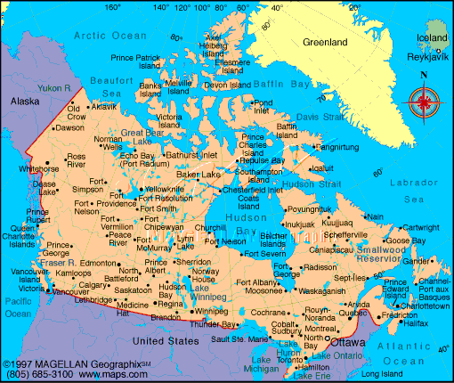

1. Signs around the world: Cities [Videotape]. Burtonsville, MD: Sign Media.
2. Kelly-Jones, N. and Hamilton, H. (1981). Signs everywhere. Los Alamitos, CA: Modern Signs Press, Inc.
1. Signs around the world: Cities [Videotape]. Burtonsville, MD: Sign Media.
2. Kelly-Jones, N. and Hamilton, H. (1981). Signs everywhere. Los Alamitos, CA: Modern Signs Press, Inc.
David
Bar-Tzur

Flag: World flag database.
Map: Maps.com - "search" for country, then "Digital Map Graphics".
For a quick, interesting resource for facts about this and other countries,
try Mystic Planet - The New Age directory of Planet Earth.
1. Signs around the world: Cities [Videotape]. Burtonsville, MD: Sign Media.
2. Kelly-Jones, N. and Hamilton, H. (1981). Signs everywhere. Los Alamitos, CA: Modern Signs Press, Inc.